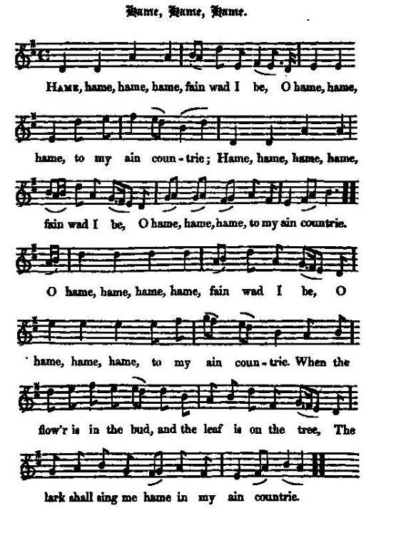

Hame, Hame, Hame!
Retourner au pays!
Three songs on Jacobite exiles to the same tune-family
Tune - Mélodie (midi)
Tune - Mélodie (mp3)
"Mary Scott, the Flower of Yarrow" from
Hogg's "Jacobite Reliques", vol.1
N° 80
Variante (midi)
(The sound background to the present page)
Original set (midi)
Original set (mp3)
From Agnes Hume's "Music Book", 1704, National Library of Scotland , Adv.MS.5.2.17
All these tunes are nearly-pentatonic
Sequenced by Christian Souchon
|
To the tune:
"[This song] is likewise taken from Cromek and sore do I suspect that we are obliged to the same masterly hand for it with the two preceding ones ( Allan Cunningham ). The air to which I have heard it sung very beautifully, seems to be a modification of the old tune of "Mary Scott, the Flower of Yarrow". Source: Hogg's "Jacobite Reliques" . "Mary Scott" , also known under the Northumbrian title "Sir John Fenwick" , appears in a fiddler's tune book of c. 1705 (in the private collection of Francis Collinson), in Agnes Hume's music book of 1704 and in the "Cumming Manuscript" of 1723. This Mary Scott lived in the 16th century. One of her descendents was Sir Walter Scott . Source "The Fiddler's Companion" (see Links). |
 |
A propos de la mélodie:
"[Ce chant] est lui aussi tiré de Cromek et je soupçonne fort que nous le devons à la même plume magistrale que les deux précédents ( Allan Cunningham ). La belle mélodie sur laquelle je l'ai entendu chanter, semble être une variante de l'ancienne chanson "Marie Scott, la Fleur de Yarrow". Source: "Jacobite Reliques" de Hogg .. "Mary Scott" que l'on connait aussi en Northumberland sous le titre "Sir John Fenwick" , apparaît dans un recueil pour le violon d'environ 1705 (collection privée Francis Collinson), dans le livre de musique d'Agnès Hume (1704) et dans le manuscrit Cumming de 1723. Cette Marie Scott vécut au 16ème siècle. L'un de ses descendants n'était autre que Walter Scott . Source "The Fiddler's Companion" (cf. Liens). |
1° Hame, Hame, Hame!
Retourner au pays!
By Allan Cunningham. 1784–1842

|
CHORUS
HAME, hame, hame, O hame fain wad I be— O hame, hame, hame, to my ain countree! Hame, hame, hame, O hame fain wad I be— O hame, hame, hame, to my ain countree! [1] 1. Hame, hame, hame, O hame fain wad I be— O hame, hame, hame, to my ain countree! When the flower is i' the bud and the leaf is on the tree, The larks shall sing me hame in my ain countree; 2. The green leaf o' loyaltie 's beginning for to fa', The bonnie White Rose it is withering an' a'; [2] But I'll water 't wi' the blude of usurping tyrannie, An' green it will graw in my ain countree. [3] 3. O, there 's nocht now frae ruin my country can save, But the keys o' kind heaven, to open the grave; That a' the noble martyrs wha died for loyaltie May rise again an' fight for their ain countree. 4. The great now are gane, a' wha ventured to save, The new grass is springing on the tap o' their grave; But the sun through the mirk blinks blythe in my e'e, 'I'll shine on ye yet in your ain countree.' From R. H. Cromek's "Remains of Nithsdale and Galloway Song" (1810). In the edition of Allan Cunningham's poems by his son Peter, in 1847, the song is called "It's hame and it's hame" and the burden is: "It's hame and it's hame, hame fain wad I be, And it's hame, hame, hame, to my ain countrie! " |
REFRAIN
Partir, partir, quitter ces rivages, Et m'en retourner dans mon cher pays! Partir, partir, quitter ces rivages, Et m'en retourner enfin dans mon cher pays! [1] 1. Lorsque s'ouvre la fleur et que verdit la feuille, L'alouette en son chant me parle de là-bas; Et c'est alors que le mal du pays m'assaille Vers lequel je voudrais tant diriger mes pas! 2. Arbre de loyauté, tu perds ton vert feuillage, La Rose Blanche aussi qui s'est mise à pâlir. [2] Que le sang du tyran vous serve de breuvage, Et dans mon cher pays vous pourrez reverdir. [3] 3. Mais rien, hélas, ne peut plus enrayer sa perte, Sinon, que les martyrs de la cause chérie Voient par un Ciel clément leurs tombes entr'ouvertes, Et reviennent lutter pour leur chère patrie. 4. La mort prend la moisson tout d'abord épargnée Et l'herbe a recouvert lentement les tombeaux. Mais le soleil a lui dans la sombre nuée, Promettant de briller sur mon pays si beau.' Traduction: Christian Souchon (c) 2009
Tiré de la collection de R. H. Cromek, "Remains of Nithsdale and Galloway Song" (1810). Dans l'édition des poèmes d'Allan Cunningham par son fils Peter, en 1847, le chant s'intitule "It's hame and it's hame" et le refrain devient:
And it's hame, hame, hame, to my ain countrie! " |
|
[1] Hogg's ascription of this poem to Allan Cunningham is corroborated by Sir Walter Scott. A
non-Jacobite version
of "It's hame and it's hame" is noticed in the introduction to the latter's novel "Fortunes of Nigel" and partly sung by one of the characters, Richie Moniplies. It has the lines:
"There's an eye that ever weeps, and a fair face will be fain, As I pass through Annan Water[ a river in Dumfriesshire ] with my bonnie bands again;" When the flower...etc." The "Author of Waverley" writes in the introduction: " With a popular impress [for his tragedy of "Sir Marmaduke Maxwell"] , people would read and admire the beauties of Allan Cunningham - as it is, they may perhaps only note his defects - or, what is worse, not note him at all.- But never mind them, honest Allan; you are a credit to Caledonia for all that. -There are some lyrical effusions of his, too, which you would do well to read, Captain. "It's hame, and it's hame," is equal to Burns." This poem is also quoted by Thomas Hardy in his novel "Mayor of Casterbridge" (1886). [2] Green leaf, white rose : the abandoned country becomes an imagined land where landscape itself is "jacobitized" and remembered foliage and flowers are both recalled and symbolical. [3] I'll water't... and fresh it : these images of renewing fertility are explicitly metaphorical, as applying to an imagined realm. |
[1] L'attribution par Hogg de ce poème à Allan Cunningham est confirmée par Walter Scott. Une
variante non-Jacobite
de ce chant est signalée par Walter Scott dans son introduction aux "Aventures de Nigel", et il le fait chanter, partiellement, par l'un des personnages, Richie Moniplies. Il comporte ces lignes:
"Si je pleure d'un œil, je voudrais bien sourire, Et traverser l'Annan, ( rivière du Dumfriesshire ), mes braves compagnons; Lorsque s'ouvre...etc." L'"auteur de Waverley" écrit dans l'introduction citée: "Publiée chez un éditeur connu [sa tragédie "Sir Marmaduke Maxwell"], serait lue par le public qui admirerait Allan Cunningham, au lieu de ne remarquer que ses faiblesses, dans les conditions présentes, ou, pire encore, de ne pas le remarquer du tout. Mais, peu importe, cher Allan, vous êtes quelqu'un dont la Calédonie peut être fière, en dépit des médisants. Il a également produit des pièces d'un rare lyrisme, que vous feriez bien de lire, capitaine. Dans son "Retourner au pays!" il se montre l'égal de Burns." Ce poème est également cité par Thomas Hardy dans son roman, le "Maire de Casterbridge" (1886). [2] Arbre de loyauté, rose blanche : le pays perdu devient un pays rêvé où le paysage lui-même devient jacobite, tandis que les feuilles et les fleurs sont à la fois des souvenirs et des symboles. [3] breuvage...reverdir : ces termes qui évoquent la fertilité retrouvée sont explicitement métaphoriques et s'appliquent à un pays imaginaire. |
2° The Battle of Lawfeld (1747)
La bataille de Lawfeld (1747)
Collected by Andrew Lang, published in 1905
|
To the lyrics:
At Lawfeld (Laffen, 1747), the Duke of Cumberland was defeated and nearly captured by the Scots and Irish in the French service. Prince Charlie is said to have served there as a volunteer. The following version was published in "New Collected Rhymes" by Andrew Lang in 1905. One verse and the refrain are of about 1750. |
A propos du texte:
A la bataille de Lawfeld (1747), le Duc de Cumberland fut battu et presque fait prisonnier par les Ecossais et Irlandais combattant dans les rangs français. Le Prince Charlie y aurait combattu comme volontaire . La version suivante fut publiée dans "New Collected Rhymes" par Andrew Lang en 1905. Une strophe et le refrain datent de 1750 environ. |
|
Oh, it's hame, hame, hame,
And it's hame I wadna be,
Till the Lord calls King James To his ain countrie, 1. Oh, it's hame, hame, hame, And it's hame I wadna be, Till the Lord calls King James To his ain countrie, Bids the wind blaw frae France, Till the Firth keps the faem, And Lochgarry and Lochiel Bring Prince Charlie hame. 2. May the lads Prince Charlie led That were hard on Willie's track (Cumberland) , When frae Laffen field he fled, Wi' the claymore at his back, May they stand on Scottish soil When the White Rose bears the gree, And the Lord calls the King To his ain countrie! 3. Bid the seas arise and stand Like walls on ilka side, Till our Highland lad pass through With Jehovah for his guide. Dry up the River Forth, As Thou didst the Red Sea, When Israel cam hame To his ain countrie! |
Que j'aimerais pouvoir
M'en aller loin d'ici,
Quand Dieu rappellera Le Roi Jacques au pays, 1. Que j'aimerais pouvoir M'en aller loin d'ici, Quand Dieu rappellera Le Roi Jacques au pays, Puisse le vent souffler, De France jusqu'au Firth; Lochgarry et Lochiel Escorteront Charlie. 2. Que ceux qu'il a conduits Là-bas, sus à Guillot (Cumberland) , Qui de Lawfeld a fui, Nos épées dans le dos, Revenus vers l'Ecosse, Voient la Rose épanouie! Que Dieu rappelle enfin Le Monarque au pays! 3. Qu'on voie les océans Faire deux grands murs d'eau, Laissant ceux des Highlands Passer, grâce au Très-Haut. O, assèche le Forth, Toi qui le fis jadis, Quand Israël rentrait Dans son pays chéri! (Trad. Ch.Souchon(c)2005) |
3° And from home I wou'd be
Je m'en irai d'ici
From the "True Loyalist", 1779, page 99
|
To the lyrics:
"Hogg's version is a charming song, 'bearing strong marks of the ingenious Allan Cunningham'. It is perfectly modern in tone. Our version may have been sung at Avignon, Sens, and many an asylum of the exiled Jacobites." Andrew Lang (d. 1922) in "Scottish Historical Review" (1909) p.148. All these songs may be paralleled to Our ain country (same burden). |
A propos du texte:
"La version de Hogg est une charmante cantilène 'qui porte la marque profondément imprimée de l'ingénieux Allan Cunningham'. Elle est parfaitement moderne dans le ton. Notre version peut avoir été chantée à Avignon, Sens et bien d'autres foyers d'expatriation Jacobite." Andrew Lang (d. 1922) dans "Scottish Historical Review" (1909) p.148. Ces différents chants sont à rapprocher de Our ain country (refrain commun). |
|
A SONG
1. And from home I wou'd be, And from home I wou'd be, And from home I wou'd be, To some foreign country, To tarry for a while, Till Heav'n think fit to smile; Bring our K[in]g from exile To his own country. 2. God save our lawful K[in]g, And from danger set him free; May the Scots, English and Irish Flock to him speedily: May the ghosts of the martyrs, Who died for loyalty, Haunt the rebels that did fight Against their King and country. 3. May the Devil take the Dutch, And drown them in the sea, Willie butcher, and all such, High hanged may they be. Curse on the volunteers To all eternity, Who did fight against our P[rin]ce In his own country. 4. May the rivers stop and stand Like walls on every side; May the brave Highland lad sight [?] Jehovah be his guide. Lord, dry up the river Forth, as thou didst the Red Sea, When the Israelites did pass To their own country. 5. Let th'Usurper go home To Hannover with speed, And all his spurious race Go far beyond the seas: Then we'll crown out lawful K[in]g, With mirth and jollity; And we'll end our days in peace In our own country. From "The True Loyalist", page 99, 1779. |
CHANT
1. Je m'en irai d'ici, Je m'en irai d'ici Je m'en irai d'ici, Dans quelque autre pays, Tant que le Ciel n'aura Pas fait rentrer le Roi D'exil enfin chez soi, Dans son cher pays. 2. Dieu veuille protéger Le Roi de tout danger, Qu'Anglais, Scots, Irlandais Reviennent tous vers lui! Que les ombres martyres Qui pour l'honneur périrent Hantent ceux qui trahirent Leur Roi, leur pays! 3. Dieu noie les Allemands Au fond de l'océan Et au gibet suspende, Haut et court, Willy! Et qu'Il veuille maudire Ceux qui te combattirent Aux côtés de leurs sbires, Prince, en ton pays! 4. Que les rivières cessent De couler et se dressent, Tels des murs et nous laissent Passer le Forth, conduits Par Dieu qui, de la sorte, Fit franchir la Mer Morte Aux Juifs, quand leur cohorte Rentrait au pays. 5. L'usurpateur rejoigne Hanovre, en Allemagne, Que sa clique regagne Là-bas, bien loin, son nid! Nous pourrons couronner, Dans la joie, la gaité Le Roi, gage de paix Pour ce cher pays! (Trad. Ch.Souchon (c) 2011) |